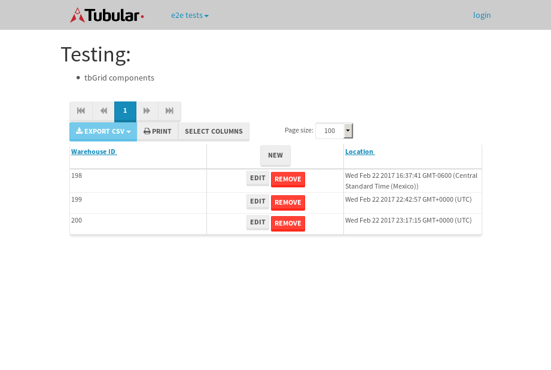

tbColumn.Grid Sorting - 32.591sTests: 5Skipped: 0Failures: 0 should sort data in ascending order then on descending order when sorting by Order Id column - 6.891sTests passed: 100.00%should order data in ascending order when click-sorting an unsorted text column - 5.315sTests passed: 100.00%should order data in descending order when click-sorting an ascending-sorted text column - 6.833sTests passed: 100.00%should order data in ascending order when click-sorting an unsorted date column - 6.47sTests passed: 100.00%should order data in descending order when click-sorting twice an unsorted date column - 7.08sTests passed: 100.00%
tbEmptyForm - 3.734sTests: 3Skipped: 0Failures: 1 should have an empty required field - 0.804sTests passed: 100.00%should not be able to click on save - 0.602sExpected null not to be null null.✗Tests passed: 50.00%should load default value for numeric field - 0.632sTests passed: 100.00%
Tubular Filters.tbColumnFilter - 115.468sTests: 12Skipped: 0Failures: 0 should cancel filtering when clicking outside filter-popover - 9.174sTests passed: 100.00%should disable Value text-input for "None" filter - 7.526sTests passed: 100.00%should disable apply button for "None" filter - 6.773sTests passed: 100.00%should decorate popover button when showing data is being filtered for its column - 12.521sTests passed: 100.00%should correctly filter data for the "Equals" filtering option - 9.947sTests passed: 100.00%should correctly filter data for the "Not Equals" filtering option - 9.92sTests passed: 100.00%should correctly filter data for the "Contains" filtering option - 9.538sTests passed: 100.00%should correctly filter data for the "Not Contains" filtering option - 9.335sTests passed: 100.00%should correctly filter data for the "Starts With" filtering option - 7.16sTests passed: 100.00%should correctly filter data for the "Not Starts With" filtering option - 7.209sTests passed: 100.00%should correctly filter data for the "Ends With" filtering option - 7.206sTests passed: 100.00%should correctly filter data for the "Not Ends With" filtering option - 7.82sTests passed: 100.00%
Tubular Filters.tbColumnDateTimeFilter - 145.04sTests: 12Skipped: 0Failures: 0 should cancel filtering when clicking outside filter-popover - 8.403sTests passed: 100.00%should disable Value text-input for "None" filter - 6.82sTests passed: 100.00%should disable apply button for "None" filter - 6.812sTests passed: 100.00%should clear filtering when clicking on Clean button - 17.95sTests passed: 100.00%should decorate popover button when showing data is being filtered for its column - 12.621sTests passed: 100.00%should correctly filter data for the "Equals" filtering option - 8.307sTests passed: 100.00%should correctly filter data for the "Not Equals" filtering option - 8.016sTests passed: 100.00%should correctly filter data for the "Between" filtering option - 14.332sTests passed: 100.00%should correctly filter data for the "Greater-or-equal" filtering option - 12.821sTests passed: 100.00%should corretlly filter data for the "Greater" filtering option - 13.073sTests passed: 100.00%should correctly filter data for the "Less-or-equal" filtering option - 12.315sTests passed: 100.00%should correctly filter data for the "Less" filtering option - 12.664sTests passed: 100.00%
Tubular Filters.tbColumnOptionsFilter - 82.329sTests: 3Skipped: 0Failures: 0 should cancel filtering when clicking outside filter-popover - 8.657sTests passed: 100.00%should decorate popover button when showing data is being filtered for its column - 12.006sTests passed: 100.00%should filter column-elements in accordance to the selected filter when selecting a single option - 50.536sTests passed: 100.00%
Tubular Filters.tbTextSearch - 50.442sTests: 5Skipped: 0Failures: 0 min-chars is not set - 1.219sTests passed: 100.00%should filter data in searchable-column customer name to matching inputted text, starting from 3 characters - 7.315sTests passed: 100.00%should filter data in searchable-column shipper city to matching inputted text, starting from 3 characters - 12.923sTests passed: 100.00%should show clear button when there is inputted text only - 7.029sTests passed: 100.00%should clear filtering when clicking clear button - 16.591sTests passed: 100.00%
tbForm related components.tbCheckboxField - 7.736sTests: 2Skipped: 0Failures: 0 should save changes on "SAVE" - 3.267sTests passed: 100.00%should discard changes on "CANCEL" - 2.712sTests passed: 100.00%
tbForm related components.tbDropDownEditor - 14.322sTests: 5Skipped: 0Failures: 0 should set initial input value to the value of "value" attribute when defined - 2.038sTests passed: 100.00%should show the component name value in a label field when "showLabel" attribute is true - 2.158sTests passed: 100.00%should show a help field equal to this attribute, is present - 2.387sTests passed: 100.00%should submit modifications to item/server when clicking form "Save" - 4.053sTests passed: 100.00%should NOT submit modifications to item/server when clicking form "Cancel" - 2.788sTests passed: 100.00%
tbForm related components.tbTextArea - 23.629sTests: 7Skipped: 0Failures: 0 should set initial input value to the value of "value" attribute when defined - 1.991sTests passed: 100.00%should be invalidated when the number of chars is not in the range of "min" and "max" attributes - 4.143sTests passed: 100.00%should show the component name value in a label field when "showLabel" attribute is true - 3.113sTests passed: 100.00%should show a help field equal to this attribute, is present - 2.625sTests passed: 100.00%should require the field when the attribute "required" is true - 2.652sTests passed: 100.00%should submit modifications to item/server when clicking form "Save" - 5.189sTests passed: 100.00%should NOT submit modifications to item/server when clicking form "Cancel" - 2.277sTests passed: 100.00%
tbForm related components.tbDateEditor - 17.162sTests: 6Skipped: 0Failures: 0 should set initial date value to the value of "value" attribute when defined - 2.776sTests passed: 100.00%should be invalidated when the date is not in the range of "min" and "max" attributes - 2.877sTests passed: 100.00%should show the component name value in a label field when "showLabel" attribute is true - 2.357sTests passed: 100.00%should show a help field equal to this attribute, is present - 2.232sTests passed: 100.00%should submit modifications to item/server when clicking form "Save" - 2.862sTests passed: 100.00%should NOT submit modifications to item/server when clicking form "Cancel" - 2.796sTests passed: 100.00%
tbForm related components.tbTypeaheadEditor - 21.252sTests: 7Skipped: 0Failures: 0 should show an options list when there is an API-info/component entered-data - 3.46sTests passed: 100.00%should select the option clicked - 2.833sTests passed: 100.00%should show a "delete" button when an option/match is selected, and delete the option if button is clicked - 2.757sTests passed: 100.00%should show a label value equal to the component name when "showLabel" attribue is true - 2.498sTests passed: 100.00%should require a value when "require" attribute is true - 2.533sTests passed: 100.00%should submit modifications to item/server when clicking form "Save" - 3.956sTests passed: 100.00%should NOT submit modifications to item/server when clicking form "Cancel" - 2.533sTests passed: 100.00%
tbForm related components.tbSimpleEditor - 25.364sTests: 9Skipped: 0Failures: 0 should set initial input value to the value of "value" attribute when defined - 2.084sTests passed: 100.00%should be invalidated when the number of chars is not in the range of "min" and "max" attributes - 2.483sTests passed: 100.00%should show the component name value in a label field when "showLabel" attribute is true - 1.987sTests passed: 100.00%should set input placeholder to the value of "placeholder" attribute - 3.458sTests passed: 100.00%should validate the control using the "regex" attribute, if present - 2.061sTests passed: 100.00%should show a help field equal to this attribute, is present - 1.963sTests passed: 100.00%should require the field when the attribute "required" is true - 2.512sTests passed: 100.00%should submit modifications to item/server when clicking form "Save" - 5.42sTests passed: 100.00%should NOT submit modifications to item/server when clicking form "Cancel" - 2.563sTests passed: 100.00%
tbForm related components.tbNumericEditor - 19.995sTests: 7Skipped: 0Failures: 0 should set initial component value to the value of "value" attribute when defined - 2.201sTests passed: 100.00%should be invalidated when the entered number is not in the range of "min" and "max" attributes - 2.48sTests passed: 100.00%should show the component name value in a label field when "showLabel" attribute is true - 2.012sTests passed: 100.00%should show a help field equal to this attribute, is present - 2.833sTests passed: 100.00%should require the field when the attribute "required" is true - 2.101sTests passed: 100.00%should submit modifications to item/server when clicking form "Save" - 3.469sTests passed: 100.00%should NOT submit modifications to item/server when clicking form "Cancel" - 3.636sTests passed: 100.00%
tbForm Connection Error NoModelKey - 3.324sTests: 1Skipped: 0Failures: 0 tbForm connection error functionality - 0.579sTests passed: 100.00%
tbForm Connection Error NoServerUrl - 3.684sTests: 1Skipped: 0Failures: 0 tbForm connection error functionality - 0.876sTests passed: 100.00%
tbGridComponents - 11.373sTests: 6Skipped: 0Failures: 1 should add item with newRow method - 4.311sTests passed: 100.00%should add item with newRow method and cancel action - 0.877sTests passed: 100.00%should update item with tbSaveButton - 0.929sFailed: ElementNotVisibleError✗Tests passed: 0.00%should NOT update item on cancel Update action - 1.323sTests passed: 100.00%should remove item with tbRemoveButton - 1.439sTests passed: 100.00%should NOT remove item on cancel Remove action - 1.038sTests passed: 100.00%
tbGridPager.navigation buttons - 10.966sTests: 1Skipped: 0Failures: 0 should perform no action when clicking on the numbered navigation button corresponding to the current-showing results page - 1.695sTests passed: 100.00%
tbGridPager.navigation buttons.first/non-last results page related functionallity - 5.117sTests: 2Skipped: 0Failures: 0 should disable "first" and "previous" navigation buttons when in first results page - 2.788sTests passed: 100.00%should enable "last" and "next" navigation buttons when in a results page other than last - 2.329sTests passed: 100.00%
tbGridPager.navigation buttons.last/non-first results page related functionallity - 4.154sTests: 2Skipped: 0Failures: 0 should disable "last" and "next" navigation buttons when in last results page - 1.789sTests passed: 100.00%should enable "first" and "previous" navigation buttons when in a results page other than first - 2.365sTests passed: 100.00%
tbGridPager.page navigation - 9.602sTests: 5Skipped: 0Failures: 0 should go to next results page when clicking on next navigation button - 2.068sTests passed: 100.00%should go to previous results page when clicking on previous navigation button - 1.984sTests passed: 100.00%should go to last results page when clicking on last navigation button - 1.525sTests passed: 100.00%should go to first results page when clicking on first navigation button - 2.369sTests passed: 100.00%should go to corresponding results page when clicking on a numbered navigation button - 1.654sTests passed: 100.00%
tbGridPagerInfo - 5.909sTests: 2Skipped: 0Failures: 0 should show text in accordance to numbered of filter rows and current results-page - 1.662sTests passed: 100.00%should show count in footer - 0.599sTests passed: 100.00%
tbHttp - 20.593sTests: 8Skipped: 1Failures: 1 should be authenticated - 3.683sTests passed: 100.00%retrieve data - 2.569sTests passed: 100.00%should not login bad credentials - 2.66sExpected '' to be 'false'.✗Tests passed: 0.00%should have a refresh token - 3.753sTests passed: 100.00%should remove authentication - 2.438sTests passed: 100.00%get method-Is not authenticated - 2.976sTests passed: 100.00%post method-Is not authenticated - 2.513sTests passed: 100.00%should regenerate access token on post - 0s***Skipped***Tests passed: 0%
tbPageSizeSelctor - 15.113sTests: 4Skipped: 0Failures: 0 should filter up to 10 data rows per page when selecting a page size of "10" - 2.788sTests passed: 100.00%should filter up to 20 data rows per page when selecting a page size of "20" - 3.35sTests passed: 100.00%should filter up to 50 data rows per page when selecting a page size of "50" - 3.937sTests passed: 100.00%should filter up to 100 data rows per page when selecting a page size of "100" - 3.468sTests passed: 100.00%
tbRowSelectable - 13.791sTests: 2Skipped: 0Failures: 0 selected rows - 6.768sTests passed: 100.00%unselected rows - 4.796sTests passed: 100.00%
tbSingleForm - 23.378sTests: 8Skipped: 1Failures: 0 should load correct info - 0s***Skipped***Tests passed: 0%should change customer name - 2.633sTests passed: 100.00%should save it - 4.178sTests passed: 100.00%should clear the inputs - 2.468sTests passed: 100.00%should update - 4.375sTests passed: 100.00%should reset editor - 2.625sTests passed: 100.00%should not save if not Changes - 4.652sTests passed: 100.00%should not be able to click on save - 2.446sTests passed: 100.00%


{kind=link}